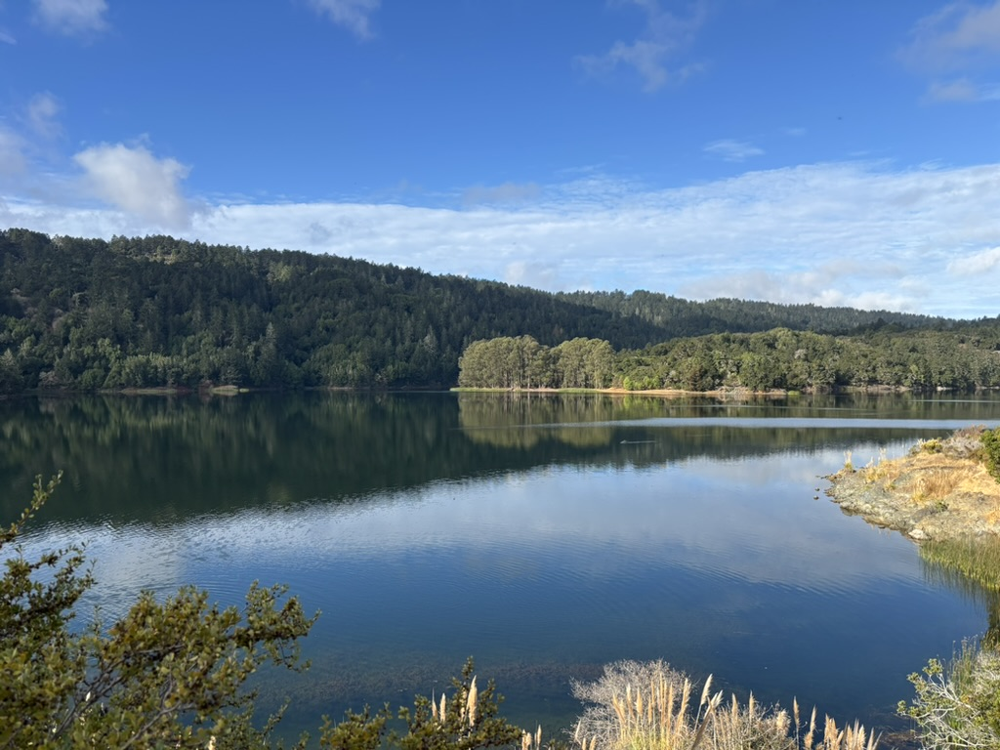

Hi there!
I'm Zezhen Wu, a behavioral scientist working at the intersection of AI, data science, and social impact.

I strive to be a polymath. I evaluate AI systems on their impact to human lives, design social interventions to help underserved communities, and use data science tools to address real-world challenges.
Currently, I work as a Behavioral Scientist at The Agency Fund, where I apply rigorous research methods to create meaningful social impact through AI and data-driven approaches.